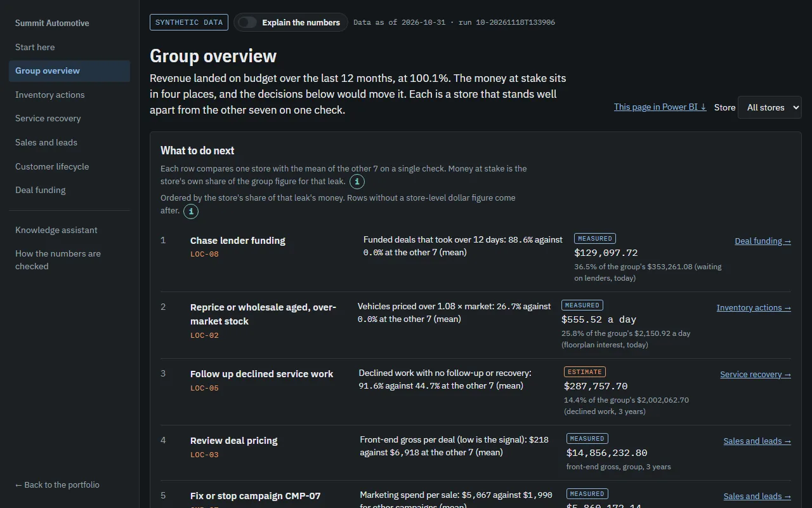
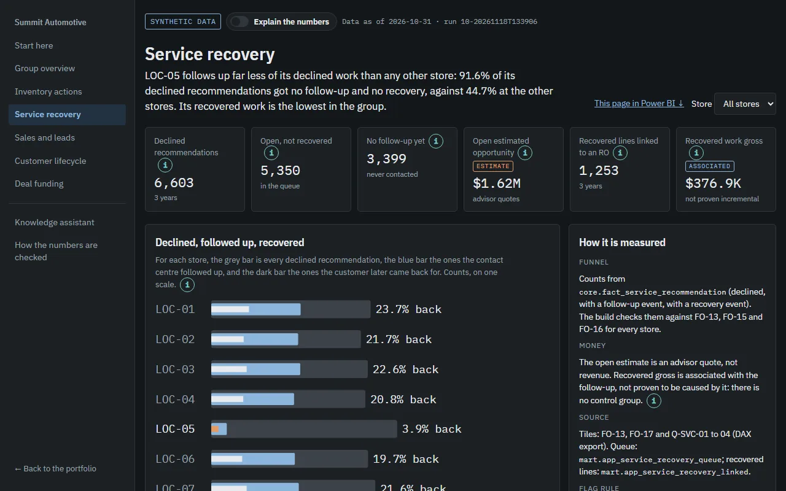

Summit Automotive Intelligence
A governed BI system for an eight-store car dealer group, checked figure by figure
Role Architect & Validator Stack Databricks, SQL, Python and Power BI Status Complete. Built on synthetic data.




Where a car dealer group quietly loses money, and how to find it
A dealer group earns its profit in many small places and loses it in places nobody sees side by side. Summit is a made-up group of eight dealerships with three years of realistic records, built so that every problem hidden in the data has a known answer.
- Repairs customers said no toCustomers declined 6,603 recommended repairs, worth about $2.0 million at the advisors' estimates, and only 19% were ever done later.
- Cars that sit too long$11.6 million is tied up in cars on the lot, costing about $2,150 a day in loan interest.
- Sold cars the lender has not paid for$353,000 is waiting on lenders, and 12% of deals took more than 12 days to be paid.
- Marketing that does not sell cars$5.9 million spent, about $2,350 for every sale that came from a campaign.
What the system does
It brings those records together, ranks the stores and the individual records that need attention, and gives each team a short work list. Service advisors get the customers to call back, the used-car manager gets the cars to reprice, and the finance office gets the deals to chase.
What it could be worth
If the service team won back 10 more of every 100 declined repairs, that would add about $199,000 in gross profit. That is a forecast, not a result, and the pages show the test that would prove it.
Why the numbers can be trusted
Each figure is a test result from the last full run. Open a figure's note to see what was tested.
-
Serving-layer tests
1,321 of 1,321
Tests passed on the last full Databricks load
Every number the reports read was compared with an answer worked out in advance from the raw files.
- 820 KPI tests: every expected value, by store and for the group, matched to within 0.0001.
- 246 tests on the knowledge views, built from the assistant's question cases.
- 255 tests on the work queues, the scenario signals and the assistant's access rules.
Databricks load batch 10, 18 Nov 2026
-
Power BI reconciliation
819 of 819
KPI rows in Power BI match the data
The Power BI model was queried with DAX and every KPI value compared with the same value in Databricks, so the report cannot drift from the data.
- 819 KPI rows, by store and for the group, equal to within 0.0001.
- 204 of 204 values on the six generated report pages.
- The same check passed in 4 of 4 runs.
DAX check, 16 to 18 Nov 2026
-
Assistant evaluation
101 of 101
Scored questions answered from the right source, or refused
The knowledge assistant answered prepared questions. A pass means it cited the right current document, or refused when the reader's role was not allowed to see it.
- A service advisor asking about lender funding paperwork is refused, because that document is limited to finance roles.
- A draft policy that is not yet approved is never used as a source.
- 4 of the 105 cases are withheld and reported, because their expected answers contradict the approved document rules. The rules were tuned on this same set, so a fresh set is still to come.
Assistant evaluation on Databricks, 18 Nov 2026
-
Planted scenarios
16 of 16
Seeded business problems found as expected
Sixteen business problems were hidden in the synthetic data on purpose. The detector must flag the stores it should, and pass over the one it cannot test.
- Store LOC-02 was given too many used cars over 45 days old (21% against about 11% at the other stores), and the detector flagged it.
- One scenario has too little data to detect, and the check confirms it is correctly not flagged.
Expected values set before the build, in the scenario test file
How it is built
Each layer is built by generated SQL and tested before the next layer reads it.
- SourcesSynthetic dealer data71 files, 777,726 rows
- BronzeRaw rowsEvery file counted against the source
- SilverTyped and cleaned313 key checks
- GoldOne governed model696 tests
- ServingKPIs and queues91 measures, 1,066 tests
- UsesWork lists and Power BI4 applications and one report
Checks before the pages are built
Six checks run on every build of the report pages, and the build stops if any of them fails. The SQL and the Power BI model are generated by script, never edited by hand.
- Power BI matches the model Pass819 KPI values read through DAX equal the serving layer.
- Queues match Databricks Pass408 queue rows and signals equal the last Databricks run.
- Scenarios found PassAll 16 scenario signals equal their expected values.
- Charts match their KPIs Pass72 monthly series and chart totals equal the measures they show.
- Data is fresh Pass33 freshness and file-hash checks confirm each layer was rebuilt after the one before it.
- Every figure explained PassEach of the 111 figures shown carries a plain-language note.
Honest limits
The pages say plainly what the evidence does not yet support.
- Data
- Synthetic; no real dealer's figures
- Action results
- Sample figures until outcome tracking is built
- Assistant score
- Measured on the set its rules were tuned on
The next phase tracks each recommended action through to a verified result, so the return can be shown as realized rather than potential.